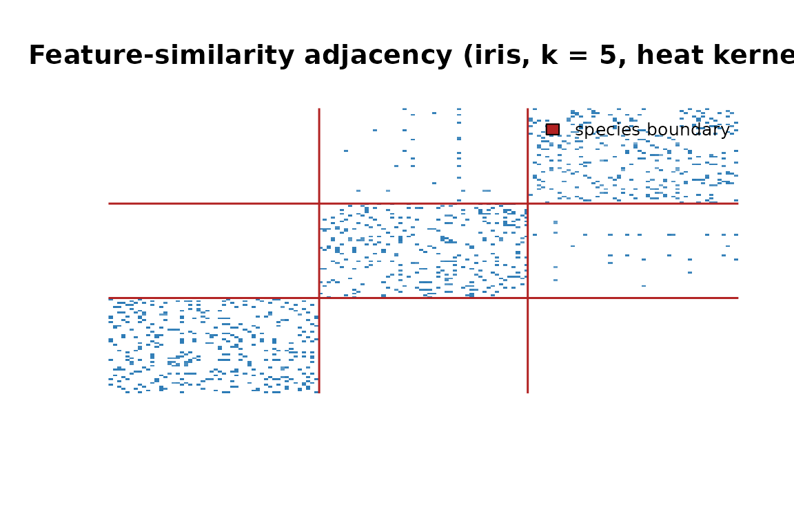
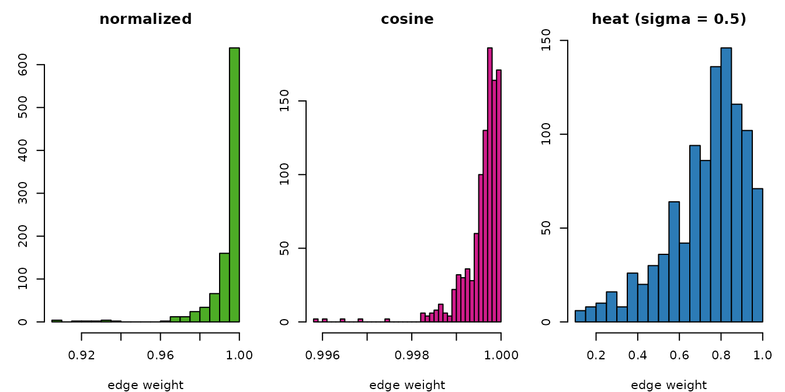
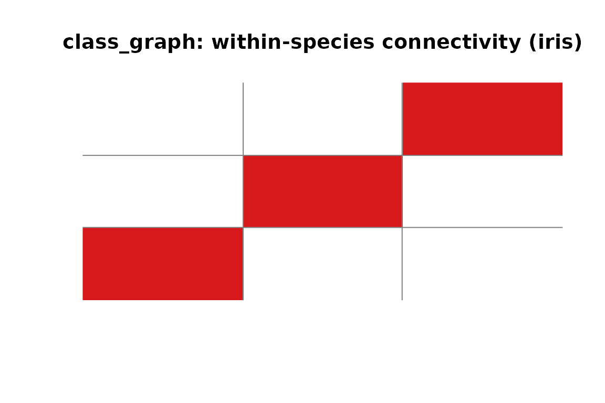

The problem: from points to a graph
Many methods in machine learning, spatial analysis, and network science share a common first step: how similar is each data point to its neighbors? The answer is an adjacency matrix — an n×n sparse matrix where entry (i, j) holds the similarity between points i and j, and off-neighbor entries are zero.
adjoin constructs these matrices from three kinds of
inputs:
- Feature data (numeric matrices) — via k-nearest neighbor graphs
- Spatial coordinates — via radius- or grid-based adjacency
- Class labels (factors) — via within-class connectivity
The output is always a neighbor_graph, a lightweight
object that exposes a consistent interface for extracting the adjacency
matrix, computing the graph Laplacian, and inspecting edges.
Your first graph
The easiest entry point is graph_weights(). Give it a
data matrix, a neighborhood size k, and a weight mode, and
it returns a ready-to-use neighbor_graph.
set.seed(42)
X <- as.matrix(iris[, 1:4]) # 150 flowers × 4 measurements
ng <- graph_weights(X, k = 5,
neighbor_mode = "knn",
weight_mode = "heat")
A <- adjacency(ng) # sparse 150×150 similarity matrix
cat("nodes:", nvertices(ng), " | edges:", nnzero(A) / 2, "\n")
#> nodes: 150 | edges: 508.5graph_weights() searched for the 5 nearest Euclidean
neighbors of each flower, converted distances to similarities with a
heat kernel (exp(−d²/2σ²)), then symmetrized the result. The adjacency
matrix is stored as a sparse Matrix — most of its 22,500
entries are zero.

Adjacency matrix reordered by species. The three diagonal blocks show that flowers connect mostly within their own species.
The three diagonal blocks confirm that the graph is recovering species structure from raw petal and sepal measurements — no labels required.
The core workflow
Every feature-similarity graph follows the same three-step pipeline.
Step 1 — Prepare data. Rows are observations; columns are features.
Step 2 — Build the graph. Pass the matrix to
graph_weights().
ng <- graph_weights(X, k = 5, weight_mode = "heat", sigma = 0.5)Step 3 — Use the graph. Extract what downstream methods need.
A <- adjacency(ng) # sparse similarity matrix
L <- laplacian(ng) # L = D − A
L_norm <- laplacian(ng, normalized = TRUE) # I − D^{-1/2} A D^{-1/2}The Laplacian is the backbone of spectral clustering, diffusion maps, and graph-regularized learning. Both the unnormalized and symmetric-normalized forms are available directly.
Inside a neighbor_graph
A neighbor_graph is a named list:
names(ng)
#> [1] "G" "params"
str(ng$params, max.level = 1)
#> List of 6
#> $ k : num 5
#> $ neighbor_mode: chr "knn"
#> $ weight_mode : chr "heat"
#> $ sigma : num 0.5
#> $ type : chr "normal"
#> $ labels : NULL-
$G— anigraphobject holding the full topology -
$params— the construction parameters, kept for reproducibility
Three accessors cover the most common needs:
nvertices(ng) # number of nodes
#> [1] 150
head(edges(ng)) # edge list as a character matrix
#> [,1] [,2]
#> [1,] "1" "5"
#> [2,] "1" "8"
#> [3,] "1" "18"
#> [4,] "1" "28"
#> [5,] "1" "29"
#> [6,] "1" "38"Choosing a weight mode
The weight_mode argument maps Euclidean distances to
similarity scores.
| Mode | Similarity | Best for |
|---|---|---|
"heat" |
exp(−d²/2σ²) | General purpose; default |
"binary" |
1 for every neighbor | Unweighted structural analysis |
"cosine" |
dot product after L2 norm | Direction matters, not magnitude |
"normalized" |
correlation-like | Zero-mean, unit-variance features |
ng_norm <- graph_weights(X, k = 5, weight_mode = "normalized")
ng_cos <- graph_weights(X, k = 5, weight_mode = "cosine")
ng_heat <- graph_weights(X, k = 5, weight_mode = "heat", sigma = 0.5)
Edge weight distributions for three weight modes. All three spread similarity scores continuously across (0, 1].
Soft weights preserve the degree of similarity, not just its
presence — nearby neighbors score near 1, distant ones near 0. The
"binary" mode (not shown) produces unweighted graphs where
every neighbor gets weight 1.
Controlling symmetry
By default, if either point nominated the other as a neighbor the
edge is included (type = "normal", union). Two alternatives
trade off sparsity and confidence:
# mutual: both must nominate each other (sparser, higher confidence)
ng_mutual <- graph_weights(X, k = 5, weight_mode = "heat",
type = "mutual")
# asym: directed — i→j does not imply j→i
ng_asym <- graph_weights(X, k = 5, weight_mode = "heat",
type = "asym")
# edge counts: normal ≥ mutual
c(normal = nnzero(adjacency(ng)) / 2,
mutual = nnzero(adjacency(ng_mutual)) / 2)
#> normal mutual
#> 508.5 241.5Mutual graphs are useful when false positives are costly — for example, selecting a reliable training neighborhood for a classifier.
The nnsearcher: reusable search index
For repeated queries, build an nnsearcher index once and
query it as many times as needed.
searcher <- nnsearcher(X, labels = iris$Species)Find neighbors for every point:
nn_result <- find_nn(searcher, k = 5)
names(nn_result) # indices, distances, labels
#> [1] "labels" "indices" "distances"Search within a subset (e.g., setosa flowers only):
nn_setosa <- find_nn_among(searcher, k = 3, idx = 1:50)Search between two groups (setosa vs. versicolor):
nn_cross <- find_nn_between(searcher, k = 3, idx1 = 1:50, idx2 = 51:100)Build a neighbor_graph from the index:
ng2 <- neighbor_graph(searcher, k = 5, transform = "heat", sigma = 0.5)The two-step approach is useful when you need to inspect raw distances before committing to a kernel, or when you want to reuse the index across multiple graph configurations.
Class-based graphs
When class labels are available, class_graph() connects
every pair of same-class points — creating a fully connected block
structure.
cg <- class_graph(iris$Species)
nclasses(cg)
#> [1] 3
class_graph adjacency for iris. Each block is a fully connected class; no edges cross species boundaries.
class_graph objects are neighbor_graph
subclasses — every accessor (adjacency(),
laplacian(), edges()) works on them too. They
also support class-specific queries:
# within-class neighbors for every point
wc <- within_class_neighbors(cg, X, k = 3)
# nearest between-class neighbors for every point
bc <- between_class_neighbors(cg, X, k = 3)This is the building block for supervised dimensionality reduction methods like LDA and neighborhood component analysis.
Cross-graph similarity
To connect two different datasets, use
cross_adjacency():
X_ref <- as.matrix(iris[1:100, 1:4]) # 100 reference points
X_query <- as.matrix(iris[101:150, 1:4]) # 50 query points
# 50×100 sparse matrix: row i = query flower, col j = nearest reference
C <- cross_adjacency(X_ref, X_query, k = 3, as = "sparse")
dim(C)
#> [1] 50 100Each row holds the heat-kernel similarities from one query point to its 3 nearest matches in the reference set. This is the foundation for cross-modal retrieval, domain adaptation, and inter-subject alignment.
Normalizing for diffusion and random walks
Raw adjacency matrices are degree-imbalanced: high-degree nodes
dominate. normalize_adjacency() row-normalizes to produce a
Markov transition matrix:
A_raw <- adjacency(ng)
A_norm <- normalize_adjacency(A_raw)
# Confirm rows sum to 1 (stochastic matrix)
range(Matrix::rowSums(A_norm))
#> [1] 0.5762124 1.3103125Row-stochastic matrices are needed for random walk analysis,
compute_diffusion_kernel(), and
compute_diffusion_map().
Quick-reference: objects and constructors
| Class | Constructor(s) | What it holds |
|---|---|---|
neighbor_graph |
graph_weights(),
weighted_knn(), neighbor_graph()
|
igraph + construction params |
class_graph |
class_graph() |
Extends neighbor_graph with class
structure |
nnsearcher |
nnsearcher() |
Fast kNN index for repeated queries |
nn_search |
find_nn(), find_nn_among(),
find_nn_between()
|
Raw search result (indices + distances) |
Where to go next
-
Spatial graphs —
spatial_adjacency()builds graphs from 2-D/3-D grid coordinates rather than feature vectors; see?spatial_adjacency. -
Diffusion —
compute_diffusion_kernel()andcompute_diffusion_map()propagate information through a graph and yield spectral embeddings. -
Label similarity —
label_matrix()andexpand_label_similarity()create soft label-overlap matrices for semi-supervised settings. -
Bandwidth selection —
estimate_sigma()automatically picks a heat kernel bandwidth from your data distribution.